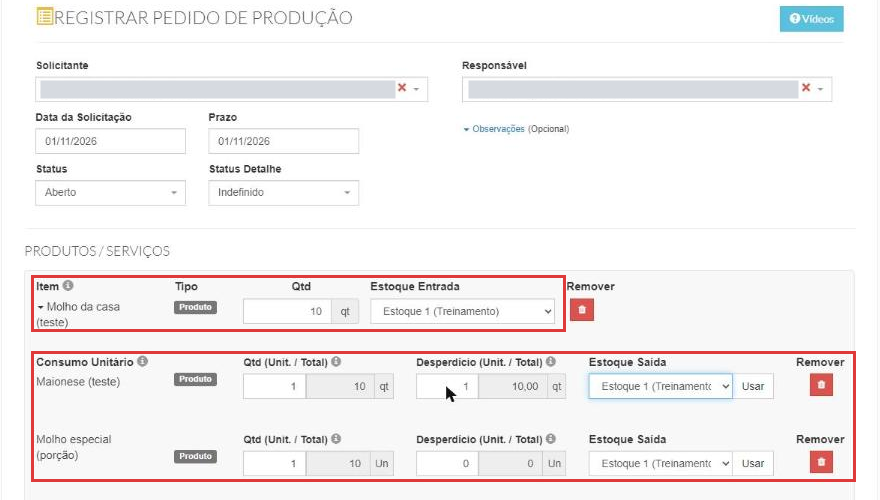
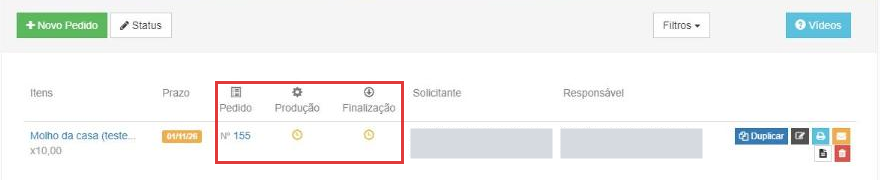
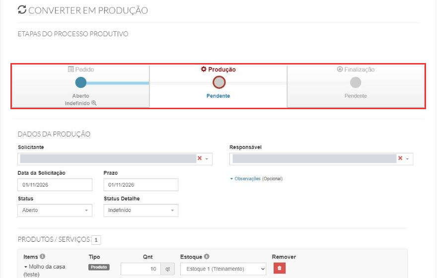
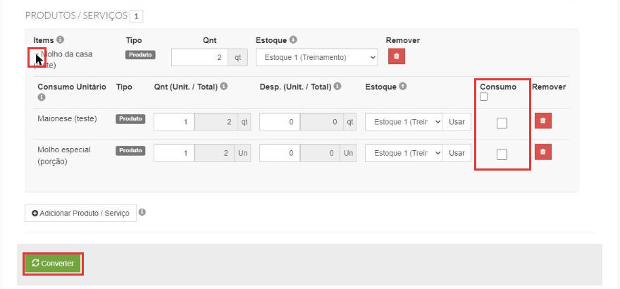
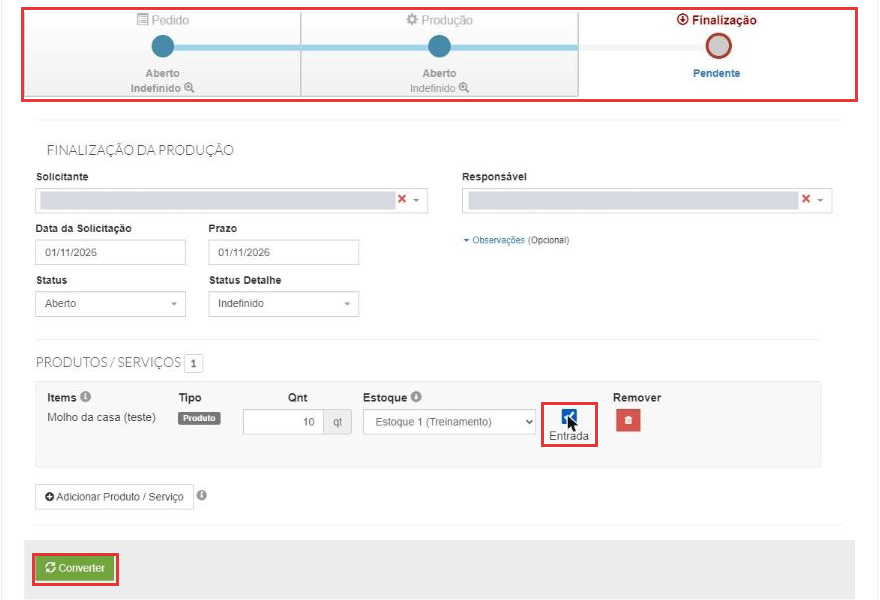

Como criar uma ordem de produção
A ordem de produção registra o que a sua cozinha produz antes de vender: o molho da casa, a massa, o pão caseiro, a porção que fica pronta no freezer. Feita na ordem certa (veja abaixo), ela tira os ingredientes do estoque e coloca o produto pronto, com o custo dos ingredientes.
Entenda o conceito
Na ficha técnica existem dois tipos de produção:
| Tipo de produção | Quando os ingredientes saem do estoque | Exemplo |
|---|---|---|
| Produção automática | Na hora da venda. Não usa ordem de produção. | X-Burger, suco |
| Processo produtivo | Quando você registra a produção, por esta tela. | Molho da casa, massa de pizza |
Quando usar: o que você produz antes e guarda (molho, massa, pão), para saber quanto tem pronto e quanto custou. Quando não usar: o que é preparado na hora do pedido; aí a ficha técnica com Produção automática já tira os ingredientes na venda.
A ordem de produção passa por três etapas, que aparecem no topo da tela:
| Etapa | No menu | O que faz no estoque (no teste) |
|---|---|---|
| Pedido | Estoque → Pedido produção | Nada. É o planejamento: o que produzir, quanto e para quando. |
| Produção | Estoque → Produção | Com a caixinha Consumo marcada, tira os ingredientes do estoque (categoria Produção). |
| Finalização | Estoque → Finalização | Com a caixinha Entrada marcada, coloca o produto pronto no estoque (categoria Produção). |
De onde vem o custo do produto pronto. No teste, a ficha do Molho da casa levava 1 maionese (R$ 3,00) e 1 molho especial (R$ 0,40). Com o consumo registrado antes da finalização, os 2 molhos produzidos entraram no estoque a R$ 3,40 cada: a soma dos ingredientes (teste sem desperdício). Para entender lotes e custo, veja Como dar entrada no estoque.
Consumo e Entrada vêm desmarcados
No teste, as caixinhas Consumo (na Produção) e Entrada (na Finalização) vieram desmarcadas. Sem marcar Consumo, a produção é salva mas os ingredientes não saem do estoque. E a ordem importa: no teste em que a finalização foi feita antes do consumo, o produto pronto entrou com custo R$ 0,00.
Antes de começar
- O produto a ser produzido precisa ter ficha técnica do tipo Processo produtivo, com os ingredientes (veja Como montar uma ficha técnica). A janela de adicionar produto mostra só esses produtos: no teste, o X-Burger, que é de Produção automática, não apareceu.
- Os ingredientes precisam ter estoque e custo (veja Como dar entrada no estoque).
- Estas telas têm o visual antigo do sistema, mas abrem normalmente dentro do menu.
Nos prints, o quadrado vermelho mostra onde você deve clicar ou digitar. Os nomes de pessoas aparecem cobertos de cinza de propósito.
Crie o pedido de produção
No menu do lado esquerdo, clique em Estoque e depois em Pedido produção. Clique em Novo Pedido.
Preencha o topo:
- Solicitante e Responsável: quem pediu e quem vai produzir (os usuários do sistema).
- Data da Solicitação e Prazo: quando foi pedido e para quando precisa estar pronto.
- Status (Aberto, Fechado ou Cancelado) e Status Detalhe: no teste, ficaram em Aberto e Indefinido em todas as etapas, mesmo depois de finalizar. Não testamos Fechado nem Cancelado.
Em Produtos / Serviços, clique em Adicionar Produto / Serviço, busque o produto e clique em Adicionar e Fechar. Na linha do produto:
- Qtd: quanto vai produzir. Exemplo: 10 molhos.
- Estoque Entrada: onde o produto pronto vai entrar.
Clique na setinha ao lado do nome para ver o Consumo Unitário: os ingredientes da ficha técnica, um por linha.
- Qtd (Unit. / Total): quanto de cada ingrediente vai em uma unidade, e o total para a quantidade pedida (a conta é feita sozinha).
- Desperdício (Unit. / Total): a perda esperada por unidade produzida. No teste, 1 maionese de desperdício por molho deu um total de 10.
- Estoque Saída: de onde o ingrediente sai. Pela dica da tela, o botão Usar aplica esse estoque em todos os ingredientes.

Clique em Salvar.
Acompanhe as etapas na lista
A mensagem de sucesso traz o atalho Converter em Produção agora. O pedido aparece na lista com as colunas Pedido, Produção e Finalização; o relógio indica que a etapa ainda está pendente.

Nesse momento nada mudou no estoque: no teste, a maionese continuou com o mesmo saldo e o molho ainda não existia no estoque.
Converta em produção e marque o consumo
Clique em Converter em Produção agora. A tela Converter em Produção mostra as etapas no topo, com Produção em destaque.

Desça até o produto e clique na setinha ao lado do nome. Na tabela de ingredientes, marque a caixinha Consumo (a do cabeçalho marca todas). É ela que tira os ingredientes do estoque. Clique em Converter.

Com Consumo marcado, saem do estoque os ingredientes mais o desperdício, na categoria Produção. Exemplo do teste: 10 molhos com 1 maionese de desperdício por molho tiraram 20 maioneses (10 de consumo + 10 de desperdício).
Se esquecer de marcar, dá para corrigir: em Estoque → Produção, clique no botão de editar da produção, abra a setinha, marque Consumo e clique em Salvar. Os ingredientes saem do estoque. Mas, se a finalização já tiver sido feita, o produto pronto continua com o custo com que entrou (no teste, R$ 0,00).
Finalize e dê entrada no produto pronto
Depois de converter, a mensagem traz o atalho Converter em Entrada de Produção agora. Clique nele. A tela Finalização da produção mostra a terceira etapa em destaque.
Na linha do produto, confira a Qnt e o Estoque, e marque a caixinha Entrada. Clique em Converter.

No print, a finalização de 10 molhos. No teste feito na ordem certa (consumo antes), os 2 molhos produzidos entraram no estoque com a categoria Produção e custo de R$ 3,40 cada (o custo dos ingredientes consumidos).
Confira no estoque
Abra o histórico dos produtos (veja Como consultar o saldo e o histórico do estoque):
- os ingredientes têm uma saída com a categoria Produção;
- o produto pronto tem uma entrada com a categoria Produção e o custo dos ingredientes.
Na lista de Estoque → Produção, o ícone ao lado do número da produção abre o Consumo de Insumos, com o insumo, o lote, o fornecedor e as datas de entrada e validade. No teste, sem o consumo marcado, ele ficou vazio.
Boas práticas
- Monte a ficha técnica antes e confira as quantidades: é dela que vem o consumo de cada ingrediente.
- Marque Consumo antes de finalizar. É o consumo que dá o custo ao produto pronto.
- Marque a caixinha Entrada na finalização: é ela que dá entrada no produto pronto.
- Use o Desperdício quando a receita sempre perde um pouco (sobra na panela, aparas). Ele sai do estoque junto com o consumo.
- Confira o histórico dos ingredientes e do produto depois de cada produção, até pegar o jeito.
Deu algum problema?
O produto não aparece em Adicionar Produto / Serviço
Só aparecem produtos com ficha técnica do tipo Processo produtivo. A dica do ⓘ ao lado do botão diz isso. Abra a ficha técnica do produto e escolha Processo produtivo (veja Como montar uma ficha técnica).
Finalizei e os ingredientes não saíram do estoque
A caixinha Consumo não foi marcada na Produção. Abra a produção em Estoque → Produção, clique na setinha do produto, marque Consumo e salve. Os ingredientes saem, mas o produto pronto que já entrou continua com o custo daquele momento (veja a próxima pergunta).
O produto pronto entrou com custo zero
No teste, isso aconteceu quando a finalização foi feita antes de marcar o consumo. Nas próximas produções, marque o consumo antes de finalizar. Para corrigir uma entrada já feita, fale com o suporte.
Finalizei e o produto pronto não apareceu no estoque
Confira se a caixinha Entrada foi marcada na finalização. Se foi e o produto não entrou, fale com o suporte.
Fechei a mensagem e perdi o atalho Converter em Produção agora
No teste, a conversão foi sempre feita pelo atalho da mensagem. Se você fechou a mensagem antes de converter, fale com o suporte.
Finalizei e o status continua Aberto
No teste, o status ficou Aberto em todas as etapas, mesmo depois da finalização. O que mostra que a produção terminou é a coluna Finalização da lista, com o número da entrada.
Relacionados: Como montar uma ficha técnica · Como dar entrada no estoque · Como consultar o saldo e o histórico do estoque
ordem de produção pedido de produção produção finalização processo produtivo produção automática ficha técnica insumos ingredientes consumo desperdício entrada de produção converter em produção converter em entrada de produção consumo de insumos custo do produto produzido custo zero molho massa produção interna estoque saída estoque entrada status aberto